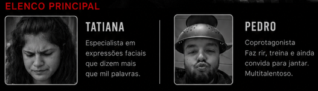

TATI-FLIX
Cena pós-créditos
Relatório final da TATI-FLIX
Cena pós-créditos
Se chegaste até aqui, desbloqueaste tudo com sucesso.
A missão foi concluída, o jantar foi aceite e a continuação desta história ficou oficialmente aprovada.

A TATI-FLIX confirma que este é o elenco principal da próxima temporada.
Um coprotagonista pronto para avançar.
E uma protagonista que continua a ser a personagem principal desta produção toda.
Missão
Concluída
Convite
Aceite
Jantar
Desbloqueado
Próximo episódio
A marcar
Algumas escolhas valem mais que mil planos.
E algumas histórias merecem mesmo uma segunda temporada.